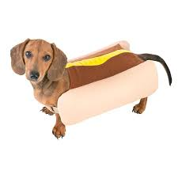

"de todas as criaturas que respiram e se movem sobre a terra,"
- Anjos e demônios sempre estiveram em conflito. Eternos
inimigos que travam uma guerra milenar que terá seu
ápice no evento final conhecido como Apocalipse. Esta é
a história contada, por séculos e mais séculos.
- a princípio,
sempre existiram duas entidades. Uma era pura força de criação, conhecida
como “Criadora”, enquanto a outra era puro caos e destruição.
- tudo se criava para que, logo após, se
destruísse para que assim, novamente, se criasse
- No entanto, tudo mudou quando aquela que seria considerada a
mais perfeita das criações apareceu: a vida.
- A vida foi considerada tão sublime, que a Criadora não permitiu
que esta entrasse no ciclo de destruição e criação: ela deveria guiar
toda a existência a partir daquele momento, devendo, portanto, ser um
conceito eterno..
